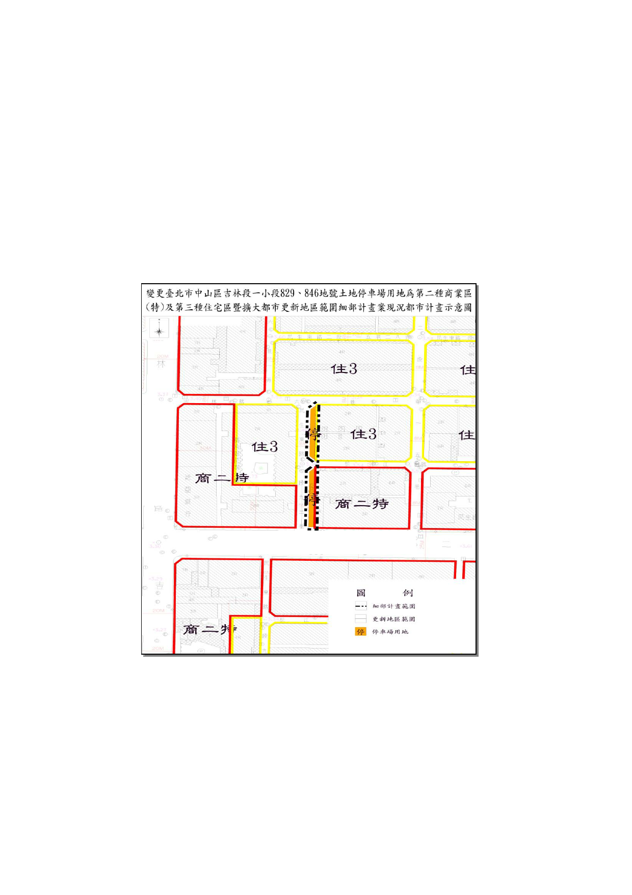

一、本變更計畫範圍位於中山區民生東路 2 段 93 巷以東、民生東
路 2 段 115 巷以西、吉林路 161 巷以南、民生東路二段以北
所圍街廓內西側部分地區，總陎積為 218 平方公尺，使用分
區為停車場用地，土地權屬為臺北市停車管理工程處。(如下
圖)
二、計畫區現況：該二筆土地形狀為狹長型，長各約 40 公尺，深
度約 3 公尺，緊臨民生東路 2 段 93 巷，已於民國 82 年以停
車場基金預算，完成開闢。惟該二停車場用地區目前供周邊
民眾停車使用，現況並未劃設停車格進行收費管理。
吉
林
路
民 生 東 路二 段
- 35 -